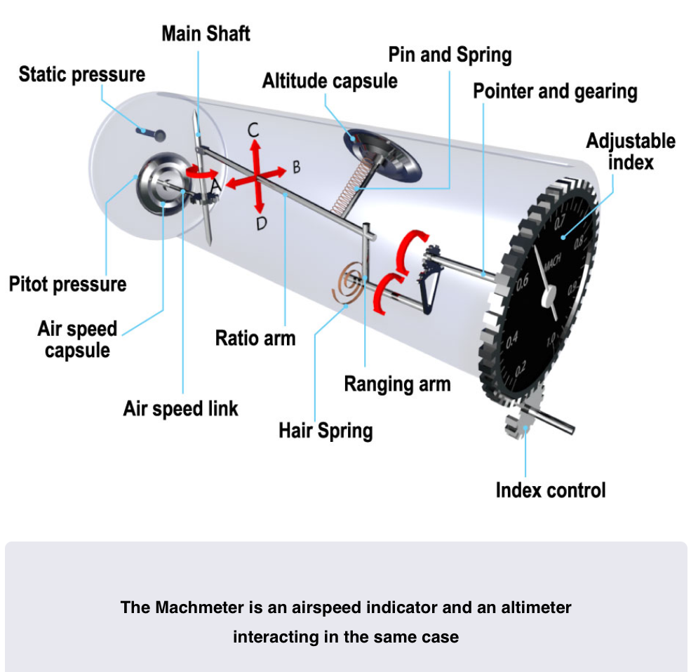
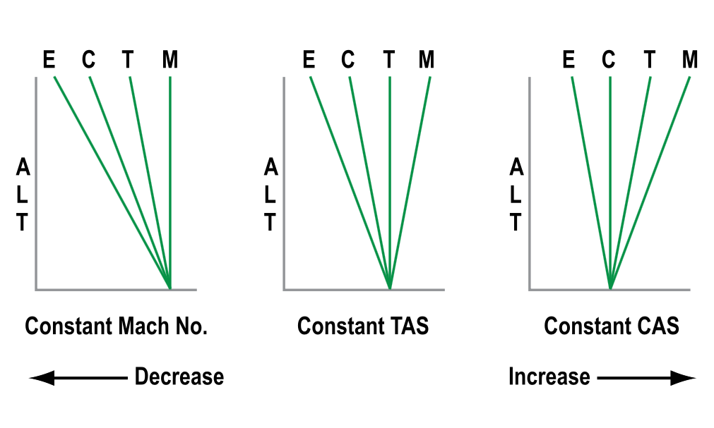

Machmeters and ADCs
The Machmeter
- Machmeter gives an indication of speed relative to the speed of sound
- At high altitudes it is usual to cruise at a Mach number ie 0.85
The Local Speed of sound
- Speed of sound is not constant and changes based on the temperature of the air
- Warmer Air = Faster the speed of sound
- LSS = $38.94\sqrt{T}$
- LSS = Local Speed of Sound
- T = Static Air Temperature in Kelvin
-
Can be calculated on the navigation computer by:
- Turn AIRSPEED window until bold arrow marked *Mach No Index becomes visible and set against the air temperature
- On the Inner Scale find number 10 (Standing for Mach 1.0)
- Opposite 10 will read LSS
-
Mach No. can only be calculated if TAS and LSS are known
- Mach No. = TAS/LSS
How the Machmeter Works
- Mach No. is a function of the dynamic pressure divided by the static pressure
- It is independent of air temperature
- LSS is affected by air temperature
- TAS is affected by air temperature
- The ratio between them remains unchanged as temperature changes
- For any given flight level (Static Pressure) and CAS (Dynamic Pressure) there is only one mach number
- It is unaffected by temperature changes
Constuction
- First generation equipment contains the elements to find dynamic pressure
- A capsule fed with pitot pressure inside a case fed with static (Which is an ASI)
- An altitude capsule to find Static pressure
- Airspeed capsule through linkages moves a ratio arm in the direction marked AB
- Effect on the Ranging depends on how the altitude capsule moves in direction CD
- Ratio arm ultimatly moves the pointer that indicates Mach No.

- Second Generation instruments are either servo driven indicators fed from the ADC or are EFIS Displays
- ADC calculates Mach No. from dynamic pressure and static pressure inputs
Errors
- Machmeters only suffer from instrument error and pressure error
- Because these 2 errors are very small the indicated Mach No. can be said to be the True Mach No.
Blockages and Leaks
- If Pitot source becomes blocked it will encounter the same errors an ASI
- Remains unchanged when level
- In a climb it will over read
- In a descent it will under read
-
If the pitot line leaks it will under read
-
If static sources become blocked
- In a climb it will under read
- In a descent it will over read
- If the static line fractures in the pressure hull
- it will under read
EAS/CAS/TAS Relationship
- ECTM diagrams help to remember relationship between EAS/CAS/TAS and Mach No.
- Normal Atmosphere sequence left to right is always drawn ECTM
- Draw parameter that will be held constant as a vertical line
- Movement to the left is a decrease
- Movement to the right is an increase

Crossover altitude
- Airliners climb on CAS until reaching a "Crossover Altitude" where they switch to Mach. And Vice Versa for descent
- In a climb a constant CAS could result in inadvertently straying into transonic region
- In a descent at a constnat Mach. the increasing CAS could easily mean Vmo is exceded
Isothermal/Inversion Layers
-
If asked about cimb or descent through a layer where temperature stays constant (Isothermal)
- Draw the T and M lines together then use ECTM diagram as before
-
If asked about climb or descent through a layer where temperature increases with height (Inversion)
- Draw ECTM with T and M swapped around (Inverted)
Air Data computers
- ADC requires inptuts from a variety of sensors, specifcally
- Static Pressure
- Total Pressure
- TAT
- Angle of Attack
- Flap and landing gear position
-
It computes and corrects this information to provide
- Pressure Altitude/Barometric altitude using static pressure
- CAS, Correcting for known pressure/position errors
- Thus for most modern aircraft IAS = CAS
- TAS, computed from pitot and static pressure
- SAT, by applying ram rise and recovery factors to TAT
- TAT, displayed as raw data if required
- Angle of Attack, Displayed on EFIS, Seperate instrument and used in Stall protection Systems
- Vertical Speed, Either from rate of change of static pressure, or from an accelerometer in a strap down IRS, or a blend of both
-
On some aircraft the ADC is integrated with the Inertial Reference Unit to create a:
- Air Data Inertial Reference Unit (ADIRU)
- Usually separate controls for the ADC part and IRU part
- Loss of an ADC is of less consequence than the loss of an individual analog pressure instrument due to redundcency provided by the use of dual ADC
- ADCs will cross compare and generate a 'Miscompare' Caution if a certain differential is reached
- Most Dual ADC's have separate pitot/static feeds to standby instruments